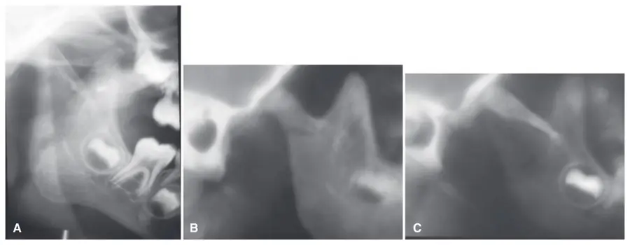
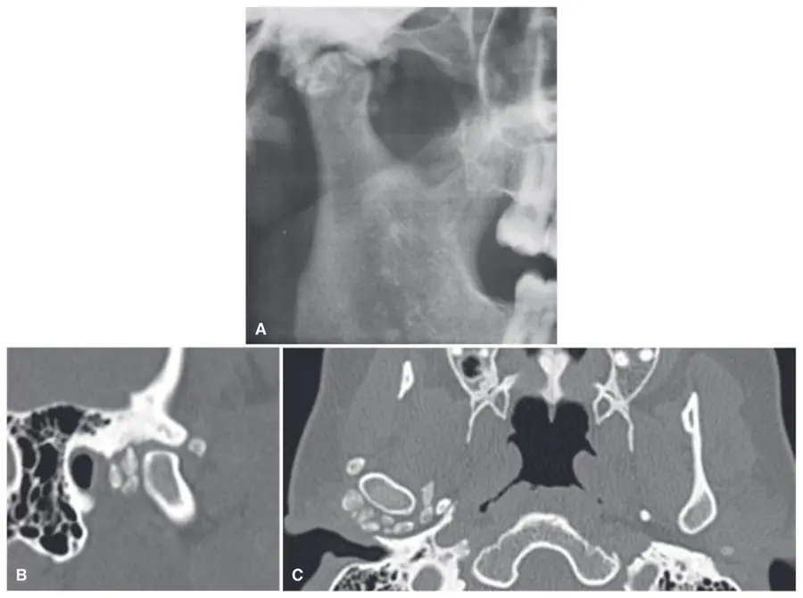

نسخه استخراجشده؛ ترجمه یا تأیید علمی انجام نشده است. وضعیت: captured
افیوژن پس از تروما معمولاً یک چیز است: «افیوژنهای درون مفصل پس از تروما بیشتر نمایندهی خونریزی به درون فضاهای مفصلی (همارتروز) هستند.»

و علائمی که غافلگیرت میکنند: افزون بر تورم و درد و کاهش دامنهی حرکت، بیمار میتواند از «احساس مایع در گوش، وزوز گوش، دشواری شنوایی، و دشواری در اکلوژن دندانهای خلفی» شکایت کند. و افیوژنها «بهتر از همه روی MRI با وزن T2 به شکل نواحی سیگنال بالا (روشن) دور کندیل دیده میشوند» و فضاهای مفصلی درگیر پهنتر میشوند.
و دررفتگی کندیل — یک تعریف دقیق: «موقعیتگیری غیرطبیعی کندیل مندیبل بیرون از حفرهی مندیبولار ولی درون کپسول مفصلی. معمولاً دوطرفه و بیشتر در جهت قدامی رخ میدهد.» و علتش: تروما (اغلب همراه با شکستگی کندیل)، باز کردن اجباری دهان مانند حین لولهگذاری، و لیگامانها و کپسول شل که به دررفتگی مزمن مستعد میکنند.
و افتراق دررفتگی از هایپرموبیلیتی — که فقط بالینی حل میشود: «در بیماران با هایپرموبیلیتی مندیبولار، کندیلها میتوانند هنگام باز شدن قدامی و فوقانی نسبت به برجستگی مفصلی جابهجا شوند. همبستگی بالینی برای تأیید اینکه بیمار نمیتواند فک را بهطور طبیعی ببندد، برای تشخیص دررفتگی مهم است.»
و حالا شکستگی — با تقسیمبندی کلیدیاش: شکستگیهای TMJ میتوانند سر کندیل (داخلکپسولی) یا گردن کندیل (خارجکپسولی) را در بر بگیرند. «شکستگیهای گردن کندیل شایعتریناند و اغلب با دررفتگی سر کندیل همراهاند.» شکستگیهای سر میتوانند افقی، عمودی یا فشاری باشند. و شکستگیهای یکطرفه شایعتر از دوطرفهاند و میتوانند با شکستگی پاراسمفیزیال یا بدنه در سمت مقابل همراه باشند.
و یک قاعدهی بالینی که باید بازتاب شرطی شود: «شکستگی کندیل باید رد شود اگر بیمار سابقهی ضربه به مندیبل، بهویژه به ناحیهی چانه، داشته باشد.»
و سه نشانهی تصویری شکستگی گردن:
و دو عدد و یک جهت که باید بدانی: «تقریباً ۶۰٪ شکستگیهای کندیل شواهد زاویهدار شدن قطعه و درجهی متغیری از جابهجایی نشان میدهند.» و «جابهجایی سر کندیل بیشتر در جهت قدامی-داخلی رخ میدهد، بهدلیل عمل عضلهی پتریگوئید خارجی که به فووهآی پتریگوئید کندیل میچسبد».
و چرا پانورامیک تنها کافی نیست: «پانورامیک ممکن است شکستگی را آشکار نکند، بهویژه شکستگیهای چوبسبز گردن کندیل، چون تغییرات در صفحهی کرونال قابل درک نیستند. تکمیل با یک تصویر تخت در زاویهی قائم مانند نمای تاون با دهان باز یا CBCT اغلب لازم است.» و CBCT روش ارجح است چون سوپرایمپوزیشن ندارد و بازسازی چندصفحهای محل قطعه را بهتر مشخص میکند.
و سرنوشت شکستگی با جابهجایی داخلی بسیار متغیر است: گاهی قطعات به شکلی اساساً طبیعی ریمادل میشوند، گاهی حفره برای جبران کمعمقتر میشود، و گاهی قطعه در موقعیت غیرطبیعی به گردن یا راموس فیوز میشود؛ تغییرات دژنراتیو و انکیلوز بعدی اگر کندیل جابهجا شده باشد شدیدترند.
و اثر بر رشد: «اگر شکستگی کندیل در دورهی رشد مندیبل رخ دهد، رشد میتواند بهدلیل آسیب به مرکز رشد کندیلی مختل شود.» بیماران زیر ۱۰ سال پتانسیل ریمادلینگ بالاتری دارند و ممکن است بدشکلی کمتری داشته باشند، «هرچند آسیبهای بیماران زیر ۳ سال تمایل دارند عدم تقارنهای شدید بسازند».
و شکستگی نوزادی — با تصویری که فراموش نمیشود: «استفاده از فورسپس حین زایمان میتواند به شکستگی و جابهجایی کندیل ابتدایی بینجامد، که بعدها به شکل هایپوپلازی شدید مندیبل و نبود رشد حفرهی گلنوئید و برجستگی مفصلی بروز میکند.» و روی پانورامیک ظاهری مشخصه دارد: «یک قیچی نیمهباز بهجای کندیل طبیعی» — که از همپوشانی تصاویر کندیل ابتدایی هویجشکل جابهجاشده به داخل و بقایای گردن کندیل ساخته میشود.
انکیلوز دو خانواده دارد: «وضعیتی که در آن حرکت کندیل محدود میشود، یا بهدلیل فیوژن اجزای داخلمفصلی («انکیلوز حقیقی»)، یا بهدلیل مانع فیزیکی ناشی از ساختارهای بیرون مفصل.» و انکیلوز داخلمفصلی خودش استخوانی یا فیبروز است.

و علتها: «بیشتر موارد یکطرفه ناشی از تروما یا عفونت مندیبلاند.» آرتریت شدید و پرتودرمانی مفصل هم میتوانند سبب شوند. و انکیلوز خارجمفصلی از شرایطی میآید که حرکت کندیل را مهار میکنند: اسپاسم یا فیبروز عضلانی، میوزیت اُسیفیکانس، یا هایپرپلازی زائدهی کرونوئید.
و تشبیه کلیدی انکیلوز فیبروز: «سطوح مفصلی معمولاً بهدلیل فرسایش نامنظمند. فضای مفصلی بسیار باریک است و هرچند استخوانها فیوز نشدهاند، دو سطح نامنظم میتوانند به نظر برسند که مانند دو قطعهی پازل در هم جا میافتند.» و حرکت کندیلی کم یا هیچ دیده میشود.
و در انکیلوز استخوانی: «فضای مفصلی میتواند تا حدی یا کاملاً با پل استخوانی محو شود، که از یک قطعهی باریک استخوان تا یک تودهی استخوانی بزرگ متغیر است.» و تغییرات مورفولوژیک جبرانی: «طویل شدن پیشروندهی زوائد کرونوئید و عمیق شدن نچ آنتهگونیال در راموس سمت مبتلا، در نتیجهی عملکرد عضلانی حین تلاش برای باز کردن دهان.»
و بهترین روش: «تصاویر کرونال اصلاحشدهی CT بهترین روش تشخیصی برای ارزیابی انکیلوز است.» و یک محدودیت صادقانه: «تفکیک انکیلوز فیبروز از دیگر علل محدودیت حرکت کندیل دشوار است چون بافت فیبروز روی تصویر دیده نمیشود.» و درمان: انکیلوز مداخلهی جراحی میخواهد، و آرتروپلاستی اینترپوزیشنال — گرافت بافت نرم مانند پوست، عضله یا چربی میان اجزای استخوانی — پیامد بهتری دارد؛ عود پس از جراحی هم ممکن است.
و اجسام آزاد مفصلی — یک تشخیص افتراقی، نه یک بیماری: کلسیفیکاسیونهایی با منشأ گوناگون که میتوانند در سینوویوم، درون کپسول در فضاهای مفصلی، یا بیرون کپسول در بافت نرم باشند. پنج منشأشان: موشهای مفصلی DJD، کندروماتوز سینوویال، کریستالهای آرتروپاتی کریستالی (کندروکلسینوز)، کلسینوز تومورال همراه با بیماری کلیوی، و در موارد نادر کندروسارکوم که میتواند ظاهرشان را تقلید کند.
و کندروماتوز سینوویال: «اختلال خوشخیم غیرشایعی که با تشکیل متاپلاستیک ندولهای غضروفی و استئوکارتیلاژینوس متعدد درون غشای سینوویال مشخص میشود. برخی از این ندولها میتوانند جدا شوند و در فضای مفصلی اجسام آزاد بسازند، جایی که باقی میمانند و با تغذیه از مایع سینوویال بزرگتر میشوند.» وقتی ندولها اُسیفیه شوند، اصطلاح استئوکندروماتوز سینوویال درست است.
و ظاهرش: فضای مفصلی میتواند پهن شود، و «شکلهای گرد با مرزهای صاف بهشدت به این وضعیت اشاره دارند». CT محلیابی را بهتر میکند و میتواند الگوی داخلی با معماری استخوانی را نشان دهد. و یک عارضهی مهم: «گاهی فرسایش از سقف حفرهی گلنوئید به حفرهی میانی جمجمه رخ میدهد، که بهتر از همه با CT کشف میشود».
و افتراقش از کندروکلسینوز: «اجسام اُسیفیه در کندروماتوز سینوویال اغلب بزرگترند و میتوانند کورتکس محیطی داشته باشند که ماهیت استخوانیشان را نشان میدهد.» در مقابل، «اجسام آزاد رادیواوپک در کندروکلسینوز اغلب ظریفتر و یکنواختتر توزیع شدهاند».
و کندروکلسینوز چیست: «کندروکلسینوز یا شبهنقرس، با سینوویت حاد یا مزمن و رسوب کریستالهای پیروفسفات کلسیم دیهیدرات در فضای مفصلی مشخص میشود. با نقرس کلاسیک تفاوت دارد که در آن کریستالهای اورات مونوسدیم منوهیدرات رسوب میکنند — از اینرو اصطلاح «شبهنقرس».» درگیری TMJ غیرشایع و یکطرفه است.
و نئوپلاسمهای TMJ نادرند، و میتوانند درونزا (کندیل، استخوان گیجگاهی، بافت نرم مفصل) یا برونزا (زائدهی کرونوئید و بافتهای نرم مجاور) باشند. «شایعترین تومور خوشخیم درونزای TMJ استئوکندروما است.»
و مهمترین نکتهی افتراقی این اسلاید: استئوکندروما بیشتر از سطح قدامی کندیل نزدیک محل چسبندگی پتریگوئید خارجی بیرون میزند، شکل مثلثی یا لوبوله با محیط صاف دارد. «برای تفکیکش از استئوما مهم است توجه کنی که استخوان اسفنجی داخلی کندیل با ساختار داخلی استئوکندروما پیوسته است، در حالی که استئوما از سطح پریوستئال برمیخیزد و بنابراین پیوستگی ترابکولار نشان نمیدهد.»
و افتراق نئوپلاسم از هایپرپلازی کندیل: «استئوما و استئوکندروما عموماً ظاهری نامنظمتر با الگوی رشد برجسته یا پایهدار میسازند، در حالی که در هایپرپلازی شکل و تناسب مشخصهی کندیل بهتر حفظ میشود.»
و بدخیمیها: «نئوپلاسمهای بدخیم درگیرکنندهی TMJ میتوانند اولیه یا — شایعتر — متاستاتیک باشند.» متاستازها از پستان، کلیه، ریه، کولون، پروستات و تیروئید میآیند. و ظاهرشان: «درجهی متغیری از تخریب استخوان با مرزهای بدمرز، بدون کورتیکاسیون و نامنظم. بیشترشان توانایی تحریک استخوانسازی نو را ندارند، بهاستثنای استئوسارکوم و کندروسارکوم.»
و افتراق بدخیمی از DJD شدید — با دو معیار قاطع: «نئوپلاسم بدخیم تخریب مرکزی عمیق استخوان میسازد، در حالی که تحلیل استخوان در DJD محیطیتر است و از سطوح مفصلی آغاز میشود. همچنین هیچ تودهی بافت نرمی همراه DJD دیده نمیشود، ولی در حضور نئوپلاسم بدخیم انتظار میرود.»